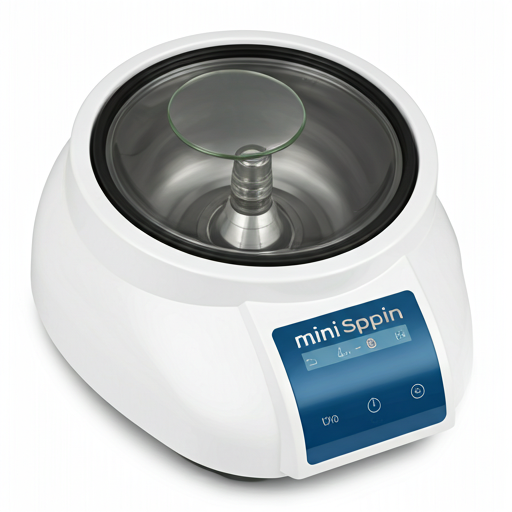

A personal, compact centrifuge designed for the uncompromising precision of molecular biology laboratories. Efficiency in a concentrated footprint.
The compact Sigma 1‑14 centrifuge fits in every lab and fulfils the most stringent technical
requirements. Its strong performance and large range of rotors are unique:
Two fixed-angle rotors provide a maximum capacity of 24 x 1.5/2.0 ml. Thanks to rotors for PCR
strips, microhaematocrit capillary tubes and filter tubes, the Sigma 1‑14 is an all-round
laboratory centrifuge suitable for a wide variety of applications. It is popular for molecular
biology applications such as DNA, RNA and protein isolation, clinical chemistry, and in research
labs and food labs, universities, and the pharmaceutical industry.
Safety meets simplicity. Our precision lid-locking mechanism ensures a secure seal with minimal physical effort, reducing laboratory fatigue.
Safety meets simplicity. Our precision lid-locking mechanism ensures a secure seal with minimal physical effort, reducing laboratory fatigue.
Safety meets simplicity. Our precision lid-locking mechanism ensures a secure seal with minimal physical effort, reducing laboratory fatigue.
ALL UNITS UNDERGO ISO-STANDARD CALIBRATION BEFORE LEAVING OUR MANUFACTURING FACILITY.
Fixed-angle & clinical rotors — engineered reliability
* All rotors certified for max 13,400 RPM and 12,100 RCF, capacity 12 positions 1.5/2.0 mL. Acceleration and deceleration times measured under standard load.
Expand your rotor functionality with certified accessories
Each accessory is ISO-grade tested to match maximum rotor performance (13,400 RPM / 12,100 RCF).